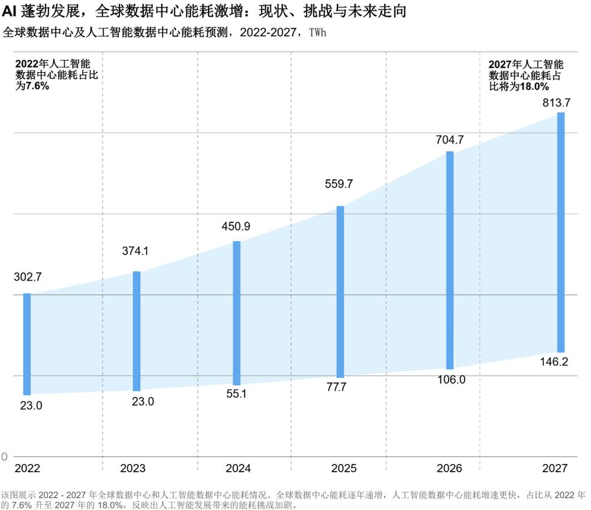
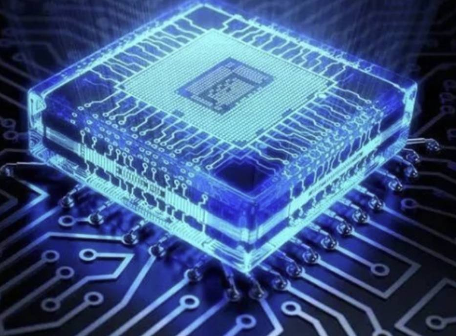
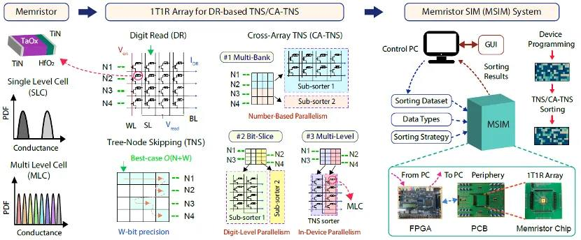
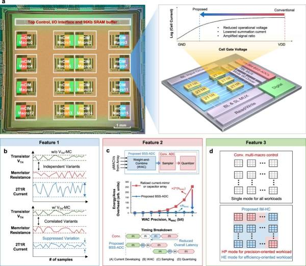
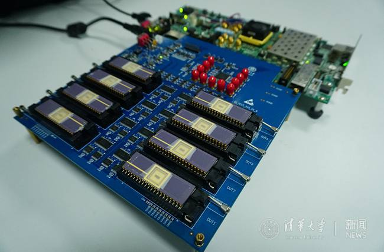
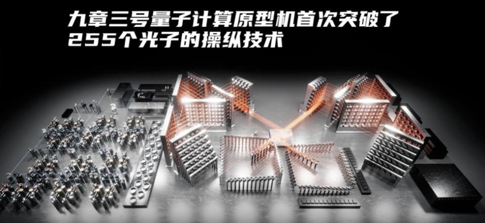
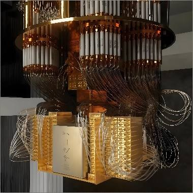

第 1 页 · 3 算力新突破
3 算力新突破

模块8：展望未来人工智能


第 2 页 · AI模型理解世界、改造世界需要强大算力支撑，算力已成为制约AI从技术构想走向规模化落地的关键瓶颈
AI模型理解世界、改造世界需要强大算力支撑，算力已成为制约AI从技术构想走向规模化落地的关键瓶颈
训练万亿参数模型往往需要数月，能耗惊人
三大前沿计算范式突破算力瓶颈：
存算一体芯片：解决效率问题
光量子计算：突破规模极限
边缘智能计算：拓展应用场景

第 3 页 · 一、存算一体芯片
一、存算一体芯片
存算一体技术借鉴了人脑存算一体的高效机制，将计算功能直接嵌入到存储单元中，实现了“在书架上直接计算”

冯诺依曼架构
计算与存储单元分离
数据在两者间反复搬运
存储墙：数据传输成瓶颈
功耗墙：搬运消耗大量能量
如同每次思考要去图书馆取书
存算一体芯片
计算嵌入存储单元
在存储位置直接完成计算
消除数据搬运开销
速度和能效实现巨大飞跃
如同在书架上直接计算
VS
第 4 页 · 一、存算一体芯片
一、存算一体芯片
新突破

北京大学团队在国际上首次构建了面向高复杂度排序任务的存算一体化硬件系统
第 5 页 · 一、存算一体芯片
一、存算一体芯片
新突破
中国科学院微电子研究所研发了一款基于近阈值计算的RRAM存算一体芯片

第 6 页 · 一、存算一体芯片
一、存算一体芯片
新突破
清华大学的基于忆阻器芯片的存算一体系统

第 7 页 · 二、光量子计算
二、光量子计算
量子比特：可处于0和1的叠加状态
计算过程具有天然并行性
连续变量体系：确定性产生量子比特和纠缠
大模型训练更快、能耗更低
让复杂AI能力走进终端设备

第 8 页 · 二、光量子计算
二、光量子计算
北京大学与山西大学课题组合作，于2025年2月，在国际上首次实现了基于集成光量子芯片的连续变量簇态量子纠缠
中国科学技术大学成功构建“祖冲之三号”，其处理“量子随机线路采样”问题的速度比目前国际最快的超级计算机快千万亿倍。

“祖冲之三号”量子计算原型机低温测试系统
光量子新突破
第 9 页 · 三、边缘智能计算
三、边缘智能计算
将AI处理从云端下沉到网络边缘侧，可理解为将总部大脑的任务分散到本地分脑
三大驱动力：实时性需求、成本效率、数据隐私
自动驾驶延迟从200-300ms降至20-50ms
边缘处理可减少70%核心云传输量
敏感数据本地处理，不出厂区或国境
第 10 页 · 三、边缘智能计算
三、边缘智能计算
1
价值重心转移
从硬件向软件与服务转移
软件服务年增长率超80%
从卖设备走向卖服务
2
AI能力升级
从TinyML迈向多模态大模型
无需定制训练识别复杂场景
工业级边缘设备直接运行
3
与5G/卫星融合
AI-on-RAN新范式
超低延迟机器人控制
卫星网络连接偏远地区
边缘计算三趋势
第 11 页 · 研讨新算力对未来行业的影响
研讨新算力对未来行业的影响

针对新算力的发展，研讨其对未来行业的影响，填写下表。
| 算力技术 | 影响行业 | 影响内容概要 |
| 存算一体芯片 | 【例如】手机 | 从普通手机变成贴心助理，更快、更省电、更安全等 |
| 光量子计算 | ||
| 边缘智能计算 | ||
| …… |
第 12 页 · 学生分享及教师点评
学生分享及教师点评

| 评价要点 | 分值 | 计分 | 教师点评 |
| 1、算力技术有扩充项 | 15 | 善于拓展，理解到位 | |
| 2、影响行业定位准确，数量不少于4项； | 25 | 算力技术与对应行业锲合度高，主动思考 | |
| 3、影响内容描述详实 | 20 | 集思广益，能看清问题本质 | |
| 4、能合理使用AI工具 | 15 | 有AI思维和素养，善用AI | |
| 5、有独特的见解和前瞻性 | 15 | 独立分析问题能力，有创新性 | |
| 6、其它（含逻辑、表情、主动、清晰、流畅、自信等） | 10 | 积极互动，表达流畅，自信开朗 |
第 13 页 · 子任务3：语音提示处理
子任务3：语音提示处理

算力乘风起
智能向未来